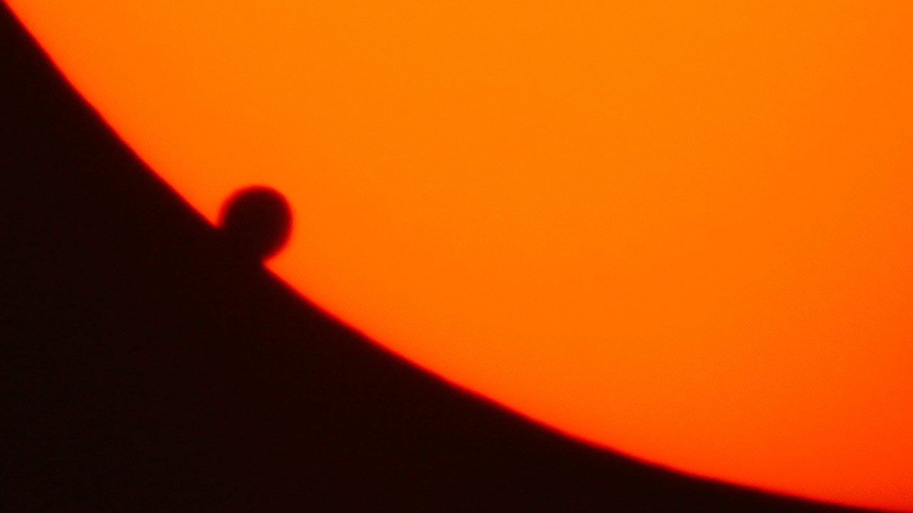

Station 10 – Wenn ein Planet vor der Sonne vorbeizieht
Bearbeite diese Station erst nach:
👉 Station 4 – Finsternisse
Einleitung
Manchmal bewegt sich ein Planet genau zwischen die Sonne und die Erde. Dann erscheint er als kleiner dunkler Punkt auf der hellen Sonnenscheibe. Dieses Ereignis nennt man Transit.

Ein besonders seltenes Beispiel ist der Venus-Transit. Dabei zieht die Venus von der Erde aus gesehen vor der Sonne vorbei. Solche Ereignisse sind sehr selten und treten in einem besonderen Rhythmus auf.
Venustransit - vom 5. Juni 2012
[Orginaltext hier] (https://www.wissenschaft.de/astronomie-physik/venustransit/)
Wer morgen nicht früh aufstehen kann oder einen bewölkten Himmel vorfindet, hat Pech gehabt: Eine partielle Sonnenfinsternis, verursacht von unserem Nachbarplaneten Venus, wird wohl kein heute lebender Mensch mehr von der Erde aus beobachten können. Der nächste Venustransit findet nämlich erst im Jahr 2117 statt.
Im Gegensatz zum letzten Venustransit am 8. Juni 2004, der in ganz Europa bei wolkenlosem Himmel fast sechs Stunden lang zu verfolgen war, lässt sich das himmlische Schauspiel von Deutschland aus morgen nur kurz nach Sonnenaufgang in der letzten Phase beobachten – höchstens knapp zwei Stunden lang. Es beginnt nämlich gegen 0.05 Uhr MESZ, wenn hierzulande die Sonne noch tief unter dem Horizont steht.
Wer morgen aber das Glück hat, einige Stunden später zu sehen, wie die rote Sonne über den Horizont steigt, kann die Venus dann als dunkles Pünktchen vor dem oberen Sonnenviertel erspähen. Es wandert immer weiter nach rechts, berührt schließlich mit seinem rechten Rand den Sonnenrand von „innen“ (sogenannter dritter Kontakt) und eine gute Viertelstunde später mit dem linken Rand (vierter Kontakt) beim Austritt gegen 6.55 Uhr MESZ. Dann ist der Transit abgeschlossen.Achtung:
Schauen Sie niemals direkt in die Sonne, sondern nur durch Spezialfilter, sonst drohen Augenschäden!
Mit einer „Sonnenfinsternisbrille“, die das Licht um einen Faktor 100.000 dämpft, ist eine gefahrlose Beobachtung des Venustransits möglich.
Auch für Beobachtungen durchs Fernglas oder Teleskop oder eine Kamera gilt: Nur mit Sonnenfilter, und zwar VOR der Optik, nicht dahinter!Die genauen Zeiten für Sonnenaufgang, dritten und vierten Kontakt hängen vom Beobachtungsort ab und variieren also. Hier finden Sie eine ausführliche Tabelle für 50 Orte in Deutschland, Österreich und der Schweiz. Je weiter nördlich und östlich man sich aufhält, desto länger dauert das himmlische Vergnügen.
Der nächste Venustransit lässt sich erst am 11. Dezember 2117 wieder von der Erde aus beobachten. Der zeitliche Abstand zwischen zwei Transits innerhalb eines Transitpaares beträgt ungefähr acht Jahre, und zwischen zwei aufeinander folgenden Paaren liegen alternierend 113,5 und 129,5 Jahre.
Doch es gibt noch eine weitere Möglichkeit: Wenn die zivile Raumfahrt wieder in Schwung kommt und der Weltraum-Tourismus so weit entwickelt würde, dass Flüge auch jenseits des erdnahen Weltraum möglich wären, dann könnte man sich so weit von der Erdbahnebene entfernen, das Venustransits sich immer beobachten ließen, wenn Venus und Erde bei ihren Sonnenumläufen ihren gemeinsamen Minimalabstand erreichen (astronomisch genauer: in unterer Konjunktion stehen): alle 584 Tage. Oder sogar noch häufiger, wenn man sich noch weiter ins All hinaus wagt.
Aufgabe 1 - Text erarbeiten
Lies den Text und beantworte folgende Fragen:
- Wann findet der nächste Venus-Transit statt?
- Wie lange kann man das Ereignis ungefähr beobachten?
- Wie sieht die Venus während des Transits aus?
Aufgabe 2 - Zusammenhänge verstehen
Erkläre warum im Text von einer „Sonnenfinsternis“ gesprochen wird und warum man den Transit nicht überall auf der Erde gleich gut beobachten kann.
Aufgabe 3 - Analysieren und einordnen
Erkläre, warum Venus-Transite so selten sind, obwohl sich die Venus regelmäßig um die Sonne bewegt. Beschreibe, was mit „unterer Konjunktion“ gemeint sein könnte. Begründe, warum man Transite im Weltraum häufiger beobachten könnte als von der Erde aus. Recherchiere dafür ggf. im Internet.
Zusatzaufgabe (freiwillig)
Im Text werden Fachbegriffe wie „dritter Kontakt“ und „vierter Kontakt“ verwendet. Erkläre, was damit gemeint ist.
Tipp
Kopier den Text in ein andere Programm. Lies den Text in Abschnitten und markiere wichtige Informationen.